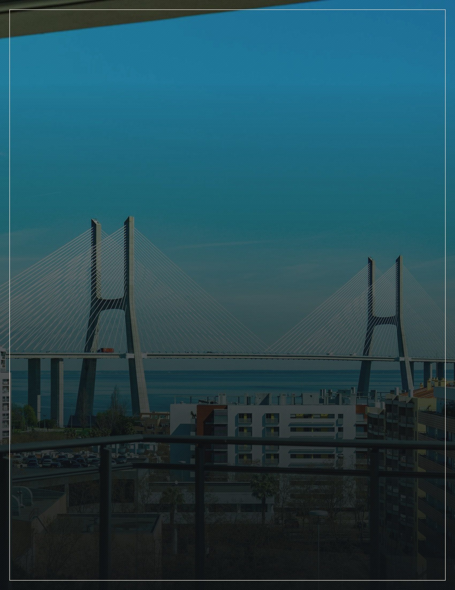
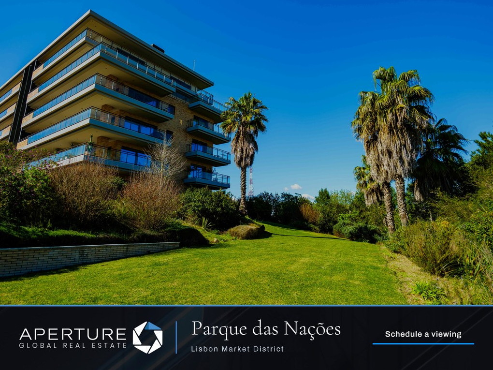
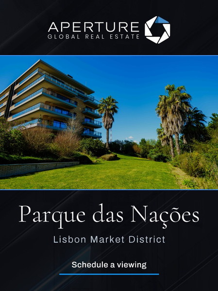
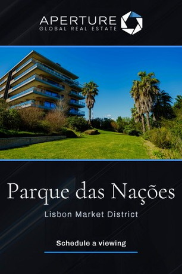
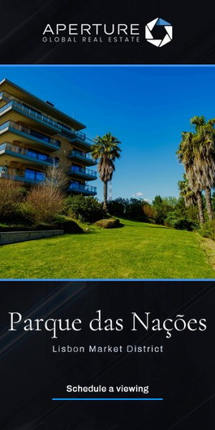
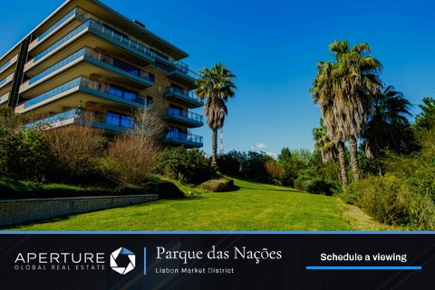
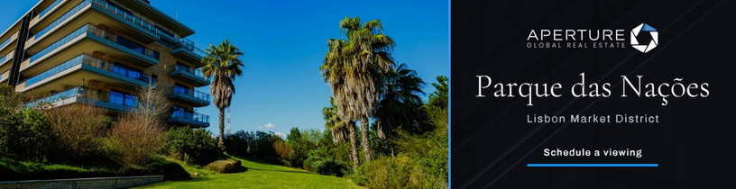
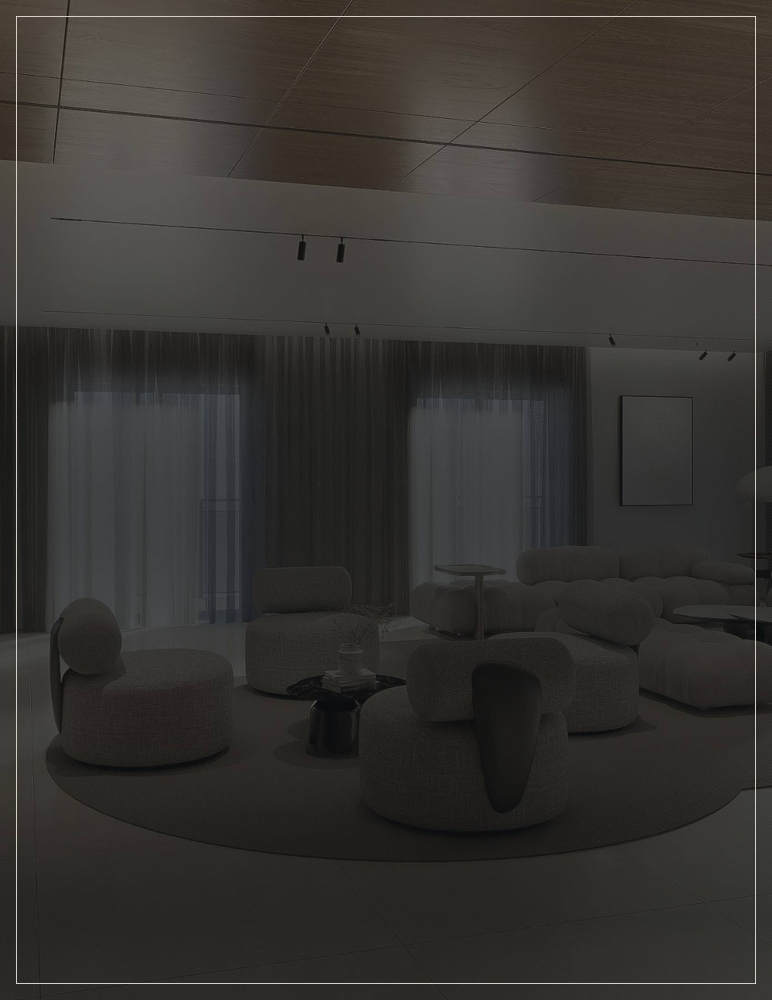

A home above the Tagus is found by buyers who are already looking abroad.
Marketing Strategy
Parque das Nações, Lisbon, Portugal
Prepared September 2026
Apertureglobal.com
The Approach
Lisbon is bought from somewhere else.
Your home is not advertised everywhere. It is advertised where it matters. A four-bedroom penthouse inside a private gated complex at Parque das Nações — 416 square metres of living area, or 4,478 square feet, with more than 200 square metres of terrace and balcony, floor-to-ceiling glass along the skyline and the river — is bought by a particular kind of buyer. At this level Lisbon is not a local market. The person who pays €4,500,000 for light, a terrace and a view of the Tagus is very often deciding from another country, and weighing Lisbon against other cities rather than against other Lisbon addresses. The campaign is built in two parts for that reason: one inside Portugal, and one for the cities abroad that send buyers to Lisbon.
Two Audiences
One campaign inside Portugal, one for buyers deciding from abroad.
Chosen Markets
Seven markets, chosen for where buyers at this level actually come from.
Tailored Creative
Six advertisements built for this home, in six shapes, for every screen.
Reported To You
A full account of where your home appeared and how buyers responded.
Marketing Strategy · The Approach
Apertureglobal.com
The Plan
Thirty days, two audiences.
Duration
Thirty days from launch
Campaigns
Two, running together
Over thirty days your home will be advertised in seven markets — Portugal, and six cities across Europe and the Americas. Six advertisements have been built for it, in six shapes, each a slow film of the terraces, the social area and the view across the Tagus, ending on an invitation to arrange a viewing.
One Figure To Follow
The plan set out here is settled. The one figure still to come is the number of impressions — the number of times your home is put in front of someone — which is confirmed once the campaign is under way.
Impressions
To be confirmed
Marketing Strategy · The Plan
Apertureglobal.com
The Two Campaigns
In Portugal, and beyond it.
Parque das Nações, Lisbon · €4,500,000
The two run side by side, over the same thirty days, as a single effort. One reaches buyers already living in Portugal; the other reaches those considering Lisbon from abroad. They do not overlap, so the same buyer is not shown your home twice.
In PortugalBeyond Portugal
Who It Reaches
Buyers already in Portugal, most of them in the Área Metropolitana de Lisboa
Buyers in the six cities abroad that send the most people to Lisbon at this level
Where It Runs
Portugal, nationwide
London, Paris, Zurich, New York, Toronto and São Paulo
How Buyers Are Found
By where they are, and by whether they are actively looking for a home
By where they are, and by whether they are looking at homes outside their own country
Where It Leads
A dedicated page for your home
A dedicated page for your home
How Often Shown
To be confirmed
To be confirmed
Marketing Strategy · The Two Campaigns
Apertureglobal.com
Where It Runs
The right buyers live in the right places.
Seven markets, chosen for where buyers at this level actually come from. Portugal carries the greatest single share of delivery, because the buyer who already knows Parque das Nações needs no introduction to it. London, Paris, New York and São Paulo carry the weight abroad; Zurich and Toronto are smaller, deliberately focused. São Paulo earns its place on the same footing as the rest: Brazil and Portugal share a language and a long, continuing movement of people in both directions, and the two cities are joined by daily non-stop service.
Chosen Market
MarketShareWhy This Market
PortugalGreatestNationwide, weighted to the Área Metropolitana de Lisboa
LondonHighEurope’s largest concentration of buyers who buy abroad
ParisHighThe same reach, and under three hours from Lisbon by air
ZurichFocusedA small, dense pool long familiar with the Portuguese coast
New YorkHighNon-stop to Lisbon the year round, and a long-standing link
TorontoFocusedA large and long-established Portuguese community
São PauloHighShared language, constant movement, daily non-stop service
Marketing Strategy · Where It Runs
Apertureglobal.com
The Advertisements
The work, as buyers will see it.
Six advertisements, in six shapes, built for the computer, the tablet and the telephone. Each moves slowly across photographs of the home over fifteen seconds — the building, the social area, the kitchen and the view across the Tagus — then closes on an invitation to arrange a viewing. The price is not shown, as is our practice.

Editorial Display

Immersive Full Screen

Telephone Full Screen

Vertical Display

Compact Display

Wide Editorial
See Them In Motion
Live Preview
These are still frames. Each advertisement moves — the complete set can be watched online.
Marketing Strategy · The Advertisements
Apertureglobal.com
What Happens Next
In the order it will happen.
Nothing here waits on a decision from you. The advertisements are built and the markets are chosen; what follows is the sequence from here to the report that reaches you at the end.
01
You See The Work
The six advertisements are finished. You watch them and approve them before a single one runs.
02
The Campaign Opens
Both campaigns open together on the same day and run side by side for thirty days.
03
The Figure Is Confirmed
The number of impressions is set once the campaign is under way, and Liza and Charles tell you what it is.
04
It Runs, And Is Watched
Where the advertisements appear and how buyers respond is followed through the month.
05
You Receive The Report
At the close of the thirty days you receive a full account: where your home was shown, in which markets, and what buyers did next.
Marketing Strategy · What Happens Next
Apertureglobal.com

Luxury without limits.
Global reach without boundaries.
Apertureglobal.com
Your Agents
Liza Falcão de Sá
Listing Agent
+351 962 735 212
liza.falcaodesa@apertureglobal.com
Charles Andrews
Listing Agent
+1 917 767 1082
charles.andrews@apertureglobal.com
Aperture Global Real Estate